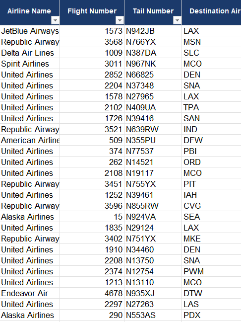

Data Sources
Department of Transportation
Bureau of Transport Statistics
This data required merging individual datasets from the different airlines that operate out of Newark Liberty International Airport and other datasets to find the types of aircraft, and general information on airport performance and satisfaction.
Reliable sources from an audited government source. Random sample tests of flights were checked to sources online to ensure accuracyWe cleaned and manipulated the dataset in the following ways:
Removed international flights due to it being out of scope.
Removed international cancelled flights due to it being out of scope.
Added new columns in the dataset to help provide more context on our insights.
Think First, Use AI, and Think Again.
Data Source: https://www.transtats.bts.gov/